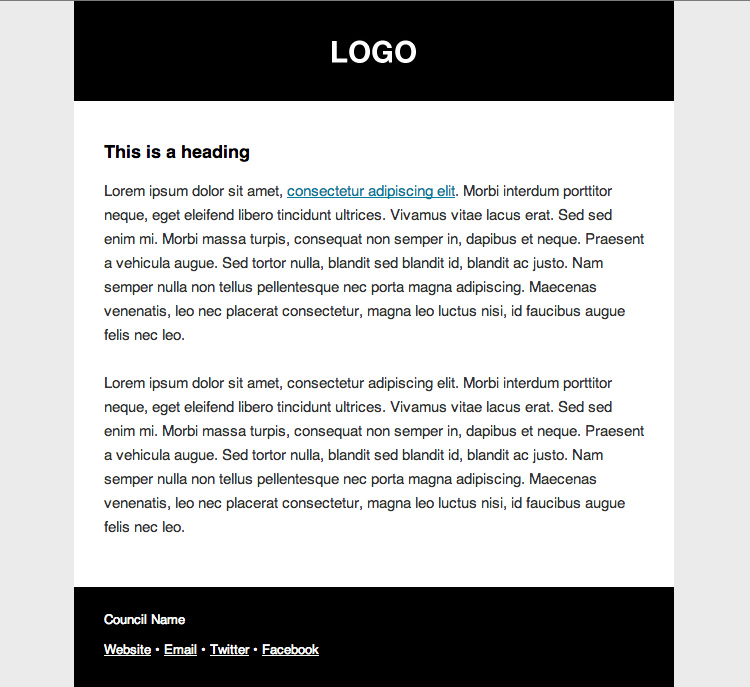

These templates can be applied to our suggested open source CMS used to underpin delivery of digital public services or to your own CMS as required.
Home
A simple, straight-to-the-point template which puts your most accessed services front and centre.
Category
Category with widget
Subcategory
Article
Guide
Signpost
Generic content
Search results
A to Z
Home with emergency banner
Email template
Emails are essential for keeping your customers up to date, from marketing messages to form submission confirmations. Our email template is rock solid and responsive, so it will look good on any of the unpredictable email clients out there.
